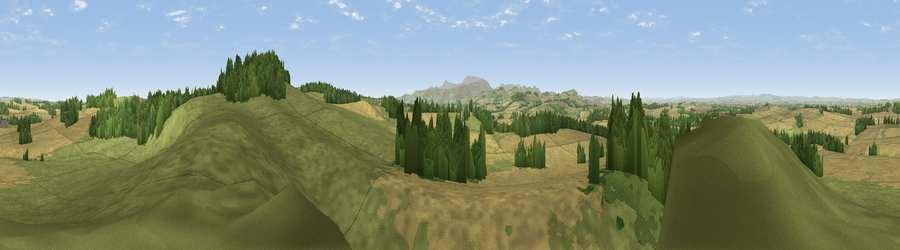

Viewpoint near Etal
#7813 in England · top 37% of its area beats it · near EtalThe view, rendered

A 360° render of this exact spot computed from the terrain model, tree cover and land cover — summer colours, afternoon light, calibrated against photographs of famous viewpoints. Real trees, hedges and buildings will differ in detail.
The panorama
Grey silhouette: terrain skyline in each direction (720 bearings, Earth curvature and refraction included). Dashed green: skyline with trees (+15 m) and buildings (+8 m) as obstacles. Blue strip: how far the ground is visible on each bearing.
Where the view opens
Wedge length = distance to the farthest visible ground on that bearing (vegetation-aware). Rings at 10, 25 and 50 km.
What fills the view
43% cropland · 39% grassland · 18% woodland
Angular shares of the visible panorama (visual magnitude), not map area. Landscape diversity 0.46 (0–1 Shannon).
Key numbers
More beautiful places nearby
The staircase of upgrades: each row has a higher view potential than everything closer. Driving times are estimates from straight-line distance, calibrated against real road routing — check an actual route before setting out.
| Place | Direction | Drive | Score |
|---|---|---|---|
| Viewpoint near Etal | ESE · 1 km | ~2 min | 72.1 |
| Viewpoint near Ford | SE · 4 km | ~10 min | 74.9 |
| Viewpoint near Doddington | SE · 7 km | ~14 min | 80.3 |
| Housedon Hill | SSW · 8 km | ~16 min | 80.5 |
| Moneylaws Hill | SW · 9 km | ~17 min | 83.0 |
| Viewpoint near Kirknewton | S · 11 km | ~21 min | 86.1 |
| Greensheen Hill | ESE · 13 km | ~23 min | 87.5 |
| Viewpoint near Chillingham | SE · 21 km | ~35 min | 88.1 |
55.65641, -2.09970 · source: screening · position refined by local search. Computed location — check access rights before visiting.